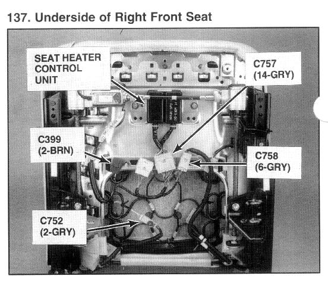

Operation CHARM
: Car repair manuals for everyone.
Home
>>
Acura
>>
1994
>>
Legend Sedan V6-3206cc 3.2L SOHC FI
>>
Repair and Diagnosis
>>
Relays and Modules
>>
Relays and Modules - Body and Frame
>>
Seat Temperature Control Module
>>
Locations
Seat Temperature Control Module: Locations

Underside of Right Front Seat